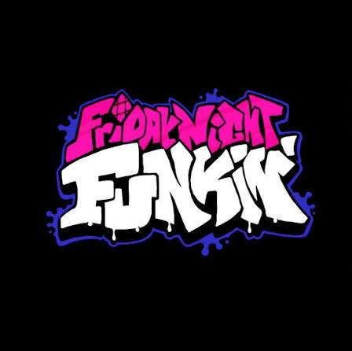

Criação de personagens:
Para criar um personagem, precisamos de, no minimo 14 sprites para cada direção.
Por:\n Gabriel Curti
Aprenda a criar seu próprio mod aqui.

Para criar um personagem, precisamos de, no minimo 14 sprites para cada direção.
Por:\n Gabriel Curti